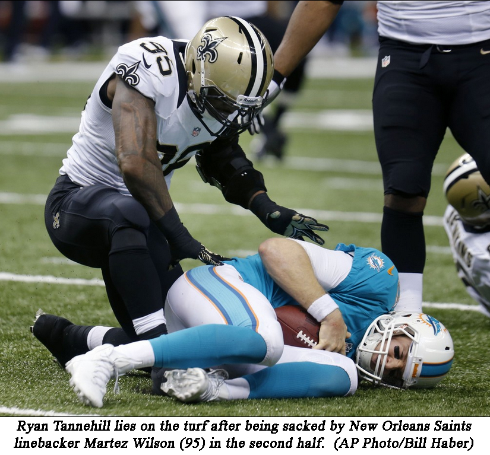

Dolphins vs Saints: Good, Bad, and Ugly Published by Brian on 10/01/2013
As Soul II Soul said in 1989, "Back to life, back to reality." The Saints handed the Dolphins a piece of reality in front of the entire country on Monday night. But today, I feel the need to talk everyone off the ledge. The season is far from over.
Keep in mind that, prior to the season, most of us would have been thrilled to come out with 2 wins before the bye. Based on our forum poll, 10 out of 17 predictions had the Saints winning the game. So are we really surprised at last night's outcome? Is it really that much of a disappointment?
But the Saints game still had that feeling of let down. I was one who thought that the Dolphins had a chance. They played their game and its obvious that they weren't ready to swim with sharks. But there may still be some things to take away from this game.
The Good
Probably the only good thing that happened last night is that the fans unrealistic growing expectations were returned to rational levels. I had been hearing discussion of winning the AFC East, albeit not impossible, but are the Dolphins really in that position?
From a player perspective, there is a reason why you didn't hear Brent Grimes's name much. He was taking care of business and Brees couldn't throw his direction. Similarly Jared Odrick played a great game on the interior defensive line. Its nice to take a minute to focus on the positives, because there were SO MANY negatives.
The Bad
Ryan Tannehill, who had been making so much progress, had his work cut out for him. He has to be able to hold the ball in traffic, or his fumbles will become a real problem. Tannehill had his worst game of the season by far, throwing it to the wrong team 3 times, and giving away 1 fumble.
But as a contributor to Tannehill's struggles was the play of the offensive line. They have improved in run blocking since week 1, but they are going to get the Dolphins' new franchise QB killed one day. They gave up another 4 sacks, bringing their 4-game total to a league-leading 18. The Dolphins are on pace to give up 72 sacks this season, which would place them 2nd all time behind David Carr's 76 in 2002. This is a problem that needs to be fixed NOW.
What can be said about Mike Wallace and his dropsies? After week 1, Wallace complained about not seeing the ball enough. Well last night, there were at least three balls that hit him square in the hands that went for incomplete passes. There were others that he gave up on the route or just didn't try to catch. Given that Pittsburgh fans were fed up by his stone hands, Mike Wallace needs to improve to be successful and earn his large salary.
The Ugly
After three weeks of silence, the boo-birds and haters have returned from their burrows of negativity. So many "fans" claims "same old Dolphins" after their first loss of the season, against one of the NFL's elite. The tweets and forum posts clamoring for Jeff Ireland's head on a platter have returned. The negativity surrounding the team from Dolphins' nation after a loss is astounding. As a Dolphins' fan, this disgusts me. I'd rather see fans be realistic as a whole, understand the data for what it is, and view the team objectively. Instead, there is too much emotion and knee-jerk reaction to a single loss. Things take time in football, and you can't expect to win every game.
The fact is, the Dolphins are still 3-1 after 4 games, and come back home next week to face a struggling Baltimore team right before their Week 6 bye. The hardest part of the schedule is behind them and almost all of the remaining games are winnable (maybe except for @ New England). From my perspective, things are looking up for the Dolphins, even after this embarrassing prime-time loss. Let's see how they bounce back next week, when hosting the reigning Super Bowl champions.